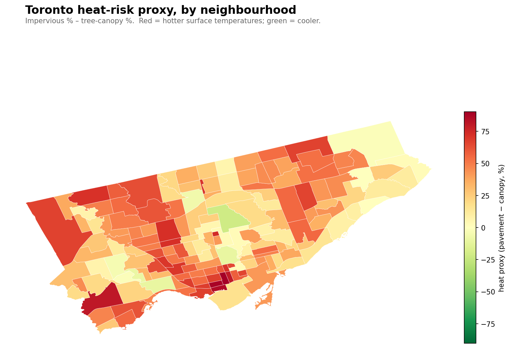
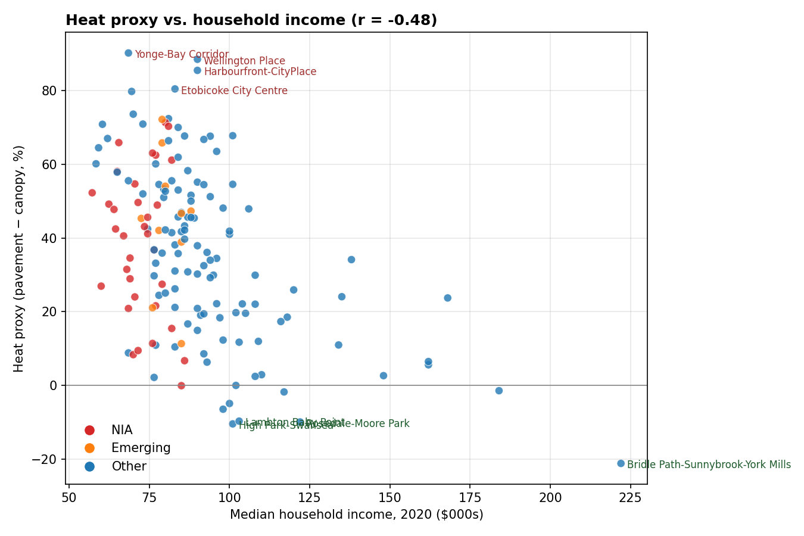
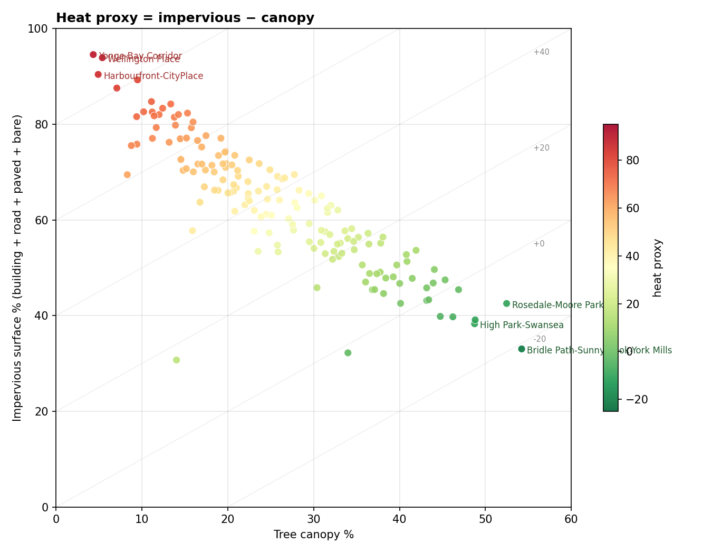

The intuitive version of the urban-heat-island story is: rich neighbourhoods are cool because they have trees, poor neighbourhoods are hot because they don't. It's the kind of thing that shows up in every equity-and-climate article, including the Radio-Canada analysis of 17 Canadian metros. And in the aggregate, for most cities, it's roughly true.
It's also only about half the Toronto story. The hottest neighbourhoods in Toronto, by any sensible proxy for surface temperature, are not poor. They're downtown.
Specifically, they're the financial-district condo core — Yonge-Bay Corridor, Wellington Place, Harbourfront-CityPlace, Downtown Yonge East. 90%+ of their ground is concrete, asphalt, or glass. Less than 10% is canopy. These places are thermal infernos in July, and they also have median household incomes of $60–90k with professional renters living mostly in AC-equipped high-rises. The people who experience the heat there aren't the residents. They're the gig workers, the transit commuters, the unhoused, and the building service staff.

The method, briefly
This analysis doesn't use satellite thermal imagery — getting that down to neighbourhood resolution for Toronto requires Earth Engine setup that wasn't worth the friction for a blog post. Instead, I use a well-established proxy from the urban-heat-island literature: impervious surface % minus tree canopy %, per neighbourhood, from the city's own 2018 LiDAR-derived land-cover data. Pavement heats cities. Canopy cools them. The difference ranks neighbourhoods by relative heat load with correlation to actual land-surface temperature typically above 0.85 in published studies.
It's a relative metric, not an absolute one. It won't tell you how many degrees hotter Yonge-Bay is than Bridle Path. It will tell you — correctly, robustly — that it is hotter.
The hottest ten
Neighbourhood
Impervious
Canopy
Heat proxy
Median income
Yonge-Bay Corridor
94.6%
4.3%
+90
$68,500
Wellington Place
93.9%
5.4%
+89
$90,000
Harbourfront-CityPlace
90.4%
4.9%
+86
$90,000
Etobicoke City Centre
87.6%
7.1%
+80
$83,000
Downtown Yonge East
89.3%
9.5%
+80
$69,500
North Toronto
84.8%
11.1%
+74
$70,000
Briar Hill-Belgravia
82.6%
10.2%
+72
$81,000
Yorkdale-Glen Park
81.6%
9.4%
+72
$79,000
Humber Summit
82.6%
11.2%
+71
$80,000
Yonge-Doris
83.4%
12.4%
+71
$71,000
Four of the top five are new-ish high-rise cores. Their "residents" are mostly absent during July heatwaves — commuters, condo residents in AC towers. The people who physically live in the heat are different populations, mostly invisible in the census columns.
The coolest ten
Neighbourhood
Impervious
Canopy
Heat proxy
Median income
Bridle Path-Sunnybrook-York Mills
33.0%
54.2%
−21
$222,000
High Park-Swansea
38.3%
48.7%
−10
$101,000
Rosedale-Moore Park
42.5%
52.5%
−10
$122,000
Lambton Baby Point
39.1%
48.8%
−10
$103,000
Lansing-Westgate
39.8%
46.2%
−6
$98,000
Edenbridge-Humber Valley
39.8%
44.7%
−5
$100,000
Morningside Heights
32.2%
34.0%
−2
$117,000
Kingsway South
45.4%
46.9%
−1
$184,000
Morningside
43.3%
43.4%
0
$85,000
Cabbagetown-South St.James Town
47.5%
45.3%
+2
$76,500
Almost exactly what you'd predict: wealthy ravine-adjacent neighbourhoods with big lots and mature canopy. Bridle Path sits at −21 — there's more canopy than impervious surface across its polygon. That's effectively a forest with some houses in it.
Two surprises on the cool list:
Morningside (NIA) at heat proxy 0. This is the only Neighbourhood Improvement Area in the cool top ten. It's in east Scarborough, adjacent to the Rouge River valley and several institutional properties (U of T Scarborough, Morningside Park). The ravine drags the land-cover mix green.
Cabbagetown-South St. James Town at +2. We've written about Cabbagetown's anomalous canopy before — the Heritage Conservation District holds the built form down, and the ravine edge adds green. Middle income, yet it lands near the cool end.
The scatter

r = −0.48 between heat proxy and income. Real but modest. The scatter is messier than canopy alone suggested.
A few things the scatter reveals that the tables hide:
The top of the heat ranking has very high variance on income. Downtown condos cluster in the $60–90k median range (young professional renters), but the top-10 hot list also includes $79k Yorkdale-Glen Park and $80k Humber Summit — suburban density with almost no canopy.
Bridle Path's −21 heat proxy is an outlier in two dimensions (very cool, very rich). Without it, the trend line flattens further.
Most NIA neighbourhoods sit in the 40-60 heat-proxy range. Hot, but nothing like the condo core.
By classification
Bucket
n
Heat proxy
Impervious
Canopy
Income
Not NIA / Not Emerging
115
36
63%
27%
$94k
Emerging
10
45
66%
21%
$81k
NIA
33
39
63%
24%
$72k
Emerging neighbourhoods are hotter on average than NIAs (45 vs 39). That's unexpected, and it shakes up a usual framing. Emerging is the city's classification for neighbourhoods that are below standard on composite well-being measures but not NIA-bad yet. In land-cover terms, they look like: old industrial cores redeveloping into density with incomplete tree canopy, recent suburban tower growth, or high-density pockets within wealthier wards. They are, by the numbers, the most heat-exposed class of Toronto neighbourhood.
The implication: "tree planting for climate equity" is the right instinct, but the targeting needs nuance. Planting more trees in NIAs addresses one piece of the problem. Planting more green infrastructure in high-rise cores — parks, plazas, green roofs, street trees on reconstructed boulevards — addresses the other piece. And the Emerging-neighbourhood thermal gap suggests we should worry about neighbourhoods before they hit NIA status, not just after.
The canopy-vs-pavement shape

The diagonal lines show constant heat proxy. Most neighbourhoods fall in a band; the top-left corner is downtown concrete and the bottom-right is Bridle Path's forest.
Something I find genuinely interesting in this view: most neighbourhoods cluster in a band where impervious + canopy ≈ 70–85% of total land. That leaves about 15–30% for grass, bare ground, shrub, and water — residential lawns, parks, institutional grass. The band is surprisingly tight. Toronto's neighbourhoods have a characteristic impervious-to-canopy tradeoff that's almost linear: for every extra 10 points of canopy, you give up about 10 points of impervious.
The outliers are the interesting places. Bridle Path's ravine polygon breaks the ceiling on canopy. The downtown condo cores break the floor on canopy. The question for planting policy is whether any neighbourhood can move diagonally on this chart — more canopy without giving up built density. Green roofs and larger tree pits in reconstructed streets are the answer the city's urban-forestry staff would give. Whether those measures can actually shift a condo-core neighbourhood from +90 toward 0 in any reasonable time is an open question.
What this analysis can't see
A few important gaps in this proxy that a real thermal study would catch:
Vertical heat. Downtown neighbourhoods have glass-and-steel walls that re-radiate sunlight. A 2D land-cover analysis doesn't capture that. Actual thermal imagery would show downtown core even hotter than this proxy suggests.
Building materials. Concrete, asphalt, and dark roofs have different albedo and thermal mass. This proxy treats them the same.
Canopy health and leaf density. A neighbourhood with 30% canopy of newly-planted 2 cm saplings cools much less than 30% mature crown. The inventory can tell us which is which (via DBH distribution) — I haven't layered that in here yet.
Time of day and season. Concrete urban cores peak hottest at 3pm; ravine-edge neighbourhoods peak hottest overnight via radiative retention. This proxy is an average over all that.
Vulnerability exposure. As already noted: the people who experience heat in a neighbourhood are not always the residents. Commuters, workers, transit-dependent people, unhoused individuals. Mapping surface temperature and mapping lived heat exposure are different projects.
A proper land-surface-temperature dataset from MODIS or Landsat would address the first two. The third is doable with our own data and worth a follow-up. The fourth and fifth are research projects.
Cool down on your own block.
Search any Toronto address and see the trees between your sidewalk and the road.